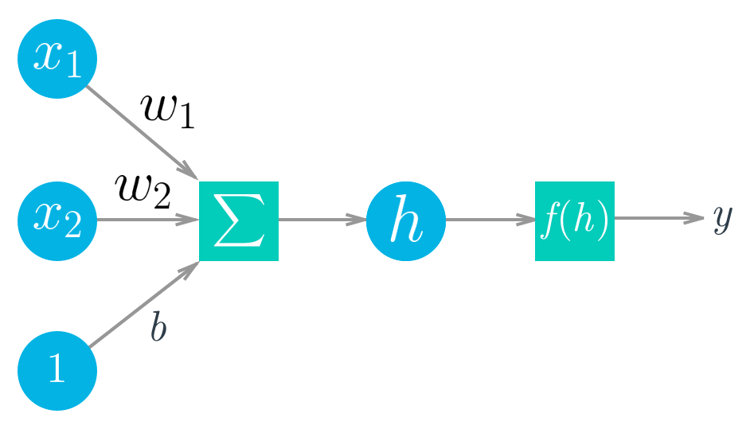

Introduction to Deep Learning with PyTorch
Contents
Introduction to Deep Learning with PyTorch¶
In this notebook, you’ll get introduced to PyTorch, a framework for building and training neural networks. PyTorch in a lot of ways behaves like the arrays you love from Numpy. These Numpy arrays, after all, are just tensors. PyTorch takes these tensors and makes it simple to move them to GPUs for the faster processing needed when training neural networks. It also provides a module that automatically calculates gradients (for backpropagation!) and another module specifically for building neural networks. All together, PyTorch ends up being more coherent with Python and the Numpy/Scipy stack compared to TensorFlow and other frameworks.
Neural Networks¶
Deep Learning is based on artificial neural networks which have been around in some form since the late 1950s. The networks are built from individual parts approximating neurons, typically called units or simply “neurons.” Each unit has some number of weighted inputs. These weighted inputs are summed together (a linear combination) then passed through an activation function to get the unit’s output.
Mathematically this looks like:
With vectors this is the dot/inner product of two vectors:
Tensors¶
It turns out neural network computations are just a bunch of linear algebra operations on tensors, a generalization of matrices. A vector is a 1-dimensional tensor, a matrix is a 2-dimensional tensor, an array with three indices is a 3-dimensional tensor (RGB color images for example). The fundamental data structure for neural networks are tensors and PyTorch (as well as pretty much every other deep learning framework) is built around tensors.

With the basics covered, it’s time to explore how we can use PyTorch to build a simple neural network.
# First, import PyTorch
import torch
D:\ProgramData\Anaconda3\lib\site-packages\pandas\compat\_optional.py:138: UserWarning: Pandas requires version '2.7.0' or newer of 'numexpr' (version '2.6.9' currently installed).
warnings.warn(msg, UserWarning)
def activation(x):
""" Sigmoid activation function
Arguments
---------
x: torch.Tensor
"""
return 1/(1+torch.exp(-x))
### Generate some data
torch.manual_seed(7) # Set the random seed so things are predictable
# Features are 5 random normal variables
features = torch.randn((1, 5))
# True weights for our data, random normal variables again
weights = torch.randn_like(features)
# and a true bias term
bias = torch.randn((1, 1))
Above I generated data we can use to get the output of our simple network. This is all just random for now, going forward we’ll start using normal data. Going through each relevant line:
features = torch.randn((1, 5)) creates a tensor with shape (1, 5), one row and five columns, that contains values randomly distributed according to the normal distribution with a mean of zero and standard deviation of one.
weights = torch.randn_like(features) creates another tensor with the same shape as features, again containing values from a normal distribution.
Finally, bias = torch.randn((1, 1)) creates a single value from a normal distribution.
PyTorch tensors can be added, multiplied, subtracted, etc, just like Numpy arrays. In general, you’ll use PyTorch tensors pretty much the same way you’d use Numpy arrays. They come with some nice benefits though such as GPU acceleration which we’ll get to later. For now, use the generated data to calculate the output of this simple single layer network.
Exercise: Calculate the output of the network with input features
features, weightsweights, and biasbias. Similar to Numpy, PyTorch has atorch.sum()function, as well as a.sum()method on tensors, for taking sums. Use the functionactivationdefined above as the activation function.
### Solution
# Now, make our labels from our data and true weights
y = activation(torch.sum(features * weights) + bias)
print(y)
y = activation((features * weights).sum() + bias)
print(y)
tensor([[0.1595]])
tensor([[0.1595]])
You can do the multiplication and sum in the same operation using a matrix multiplication. In general, you’ll want to use matrix multiplications since they are more efficient and accelerated using modern libraries and high-performance computing on GPUs.
Here, we want to do a matrix multiplication of the features and the weights. For this we can use torch.mm() or torch.matmul() which is somewhat more complicated and supports broadcasting. If we try to do it with features and weights as they are, we’ll get an error
>> torch.mm(features, weights)
---------------------------------------------------------------------------
RuntimeError Traceback (most recent call last)
<ipython-input-13-15d592eb5279> in <module>()
----> 1 torch.mm(features, weights)
RuntimeError: size mismatch, m1: [1 x 5], m2: [1 x 5] at /Users/soumith/minicondabuild3/conda-bld/pytorch_1524590658547/work/aten/src/TH/generic/THTensorMath.c:2033
As you’re building neural networks in any framework, you’ll see this often. Really often. What’s happening here is our tensors aren’t the correct shapes to perform a matrix multiplication. Remember that for matrix multiplications, the number of columns in the first tensor must equal to the number of rows in the second column. Both features and weights have the same shape, (1, 5). This means we need to change the shape of weights to get the matrix multiplication to work.
Note: To see the shape of a tensor called tensor, use tensor.shape. If you’re building neural networks, you’ll be using this method often.
There are a few options here: weights.reshape(), weights.resize_(), and weights.view().
weights.reshape(a, b)will return a new tensor with the same data asweightswith size(a, b)sometimes, and sometimes a clone, as in it copies the data to another part of memory.weights.resize_(a, b)returns the same tensor with a different shape. However, if the new shape results in fewer elements than the original tensor, some elements will be removed from the tensor (but not from memory). If the new shape results in more elements than the original tensor, new elements will be uninitialized in memory. Here I should note that the underscore at the end of the method denotes that this method is performed in-place. Here is a great forum thread to read more about in-place operations in PyTorch.weights.view(a, b)will return a new tensor with the same data asweightswith size(a, b).
I usually use .view(), but any of the three methods will work for this. So, now we can reshape weights to have five rows and one column with something like weights.view(5, 1).
Exercise: Calculate the output of our little network using matrix multiplication.
## Solution
y = activation(torch.mm(features, weights.view(5,1)) + bias)
Stack them up!¶
That’s how you can calculate the output for a single neuron. The real power of this algorithm happens when you start stacking these individual units into layers and stacks of layers, into a network of neurons. The output of one layer of neurons becomes the input for the next layer. With multiple input units and output units, we now need to express the weights as a matrix.
The first layer shown on the bottom here are the inputs, understandably called the input layer. The middle layer is called the hidden layer, and the final layer (on the right) is the output layer. We can express this network mathematically with matrices again and use matrix multiplication to get linear combinations for each unit in one operation. For example, the hidden layer (\(h_1\) and \(h_2\) here) can be calculated
The output for this small network is found by treating the hidden layer as inputs for the output unit. The network output is expressed simply
### Generate some data
torch.manual_seed(7) # Set the random seed so things are predictable
# Features are 3 random normal variables
features = torch.randn((1, 3))
# Define the size of each layer in our network
n_input = features.shape[1] # Number of input units, must match number of input features
n_hidden = 2 # Number of hidden units
n_output = 1 # Number of output units
# Weights for inputs to hidden layer
W1 = torch.randn(n_input, n_hidden)
# Weights for hidden layer to output layer
W2 = torch.randn(n_hidden, n_output)
# and bias terms for hidden and output layers
B1 = torch.randn((1, n_hidden))
B2 = torch.randn((1, n_output))
Exercise: Calculate the output for this multi-layer network using the weights
W1&W2, and the biases,B1&B2.
### Solution
h = activation(torch.mm(features, W1) + B1)
output = activation(torch.mm(h, W2) + B2)
print(output)
tensor([[0.3171]])
If you did this correctly, you should see the output tensor([[ 0.3171]]).
The number of hidden units a parameter of the network, often called a hyperparameter to differentiate it from the weights and biases parameters. As you’ll see later when we discuss training a neural network, the more hidden units a network has, and the more layers, the better able it is to learn from data and make accurate predictions.
Numpy to Torch and back¶
Special bonus section! PyTorch has a great feature for converting between Numpy arrays and Torch tensors. To create a tensor from a Numpy array, use torch.from_numpy(). To convert a tensor to a Numpy array, use the .numpy() method.
import numpy as np
a = np.random.rand(4,3)
a
array([[0.200809 , 0.08544596, 0.38277231],
[0.0419331 , 0.91726673, 0.58493555],
[0.79627484, 0.08312361, 0.4022789 ],
[0.39864685, 0.2119464 , 0.18701356]])
b = torch.from_numpy(a)
b
tensor([[0.2008, 0.0854, 0.3828],
[0.0419, 0.9173, 0.5849],
[0.7963, 0.0831, 0.4023],
[0.3986, 0.2119, 0.1870]], dtype=torch.float64)
b.numpy()
array([[0.200809 , 0.08544596, 0.38277231],
[0.0419331 , 0.91726673, 0.58493555],
[0.79627484, 0.08312361, 0.4022789 ],
[0.39864685, 0.2119464 , 0.18701356]])
The memory is shared between the Numpy array and Torch tensor, so if you change the values in-place of one object, the other will change as well.
# Multiply PyTorch Tensor by 2, in place
b.mul_(2)
tensor([[0.4016, 0.1709, 0.7655],
[0.0839, 1.8345, 1.1699],
[1.5925, 0.1662, 0.8046],
[0.7973, 0.4239, 0.3740]], dtype=torch.float64)
# Numpy array matches new values from Tensor
a
array([[0.40161801, 0.17089192, 0.76554462],
[0.0838662 , 1.83453346, 1.16987109],
[1.59254969, 0.16624722, 0.80455781],
[0.7972937 , 0.4238928 , 0.37402712]])